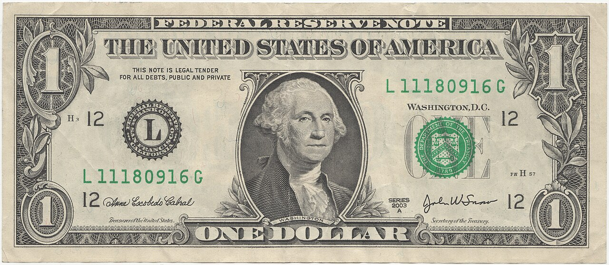

Verificación en dos pasos
Active el segundo factor en la plataforma, en el correo y en el banco. El correo es la vía de recuperación: si alguien entra en él, puede reescribir la contraseña de todo lo demás.
Guía personal de mercados
Esta página resume los tres mercados que opero y, sobre todo, las reglas de gestión de riesgo y seguridad que aplico para no convertir un error operativo en una pérdida real. No es una recomendación de inversión: es mi cuaderno de trabajo hecho público.

El euro se escribe siempre a la izquierda porque es la moneda base; el dólar, a la derecha, es la moneda de cotización. Cuando el par sube, significa que hace falta más dólares para comprar un euro, no que el euro sea "más fuerte" en un sentido absoluto: es una comparación relativa entre las dos.
Para seguir el valor de referencia del euro frente a otras divisas, el Banco Central Europeo publica los tipos de cambio de referencia oficiales cada día laborable.
Igual que en el par anterior, el dólar está a la derecha como moneda de cotización. La diferencia es que aquí no se cotiza por kilo sino por onza troy, que equivale a 31,1035 gramos. Es una medida medieval, heredada de la feria de Troyes, en Francia, que se quedó pegada al mercado de metales preciosos: por eso el oro sigue midiéndose en onzas y no en gramos.
Las series históricas de precio las publica la World Gold Council en su portal de datos, y los precios de referencia internacionales los fija la London Bullion Market Association dos veces al día.
No es una bolsa: es un índice. El S&P 500 agrupa 500 empresas estadounidenses de gran capitalización y se pondera por capital bursátil, de modo que las compañías más grandes pesan mucho más que las pequeñas dentro del conjunto. Eso concentra el riesgo: el índice se parece mucho a sus diez mayores componentes.
Si quieres la versión introductoria sobre cómo funcionan los índices y los fondos que los replican, la Commissione de Valores e Inversiones de EE. UU. publica una guía básica de inversión.
Un error técnico se corrige; un error de seguridad no. Estas son las tres medidas que aplico sin excepción, en ese orden de prioridad, precisamente porque estudio ciberseguridad y porque una cuenta mal protegida es un riesgo operativo, no financiero.
Active el segundo factor en la plataforma, en el correo y en el banco. El correo es la vía de recuperación: si alguien entra en él, puede reescribir la contraseña de todo lo demás.
Las claves que uso para consultar datos nunca pueden retirar fondos. Restringirlas por IP y por permiso es la diferencia entre un incidente recuperable y uno que no lo es.
El nivel de invalidación se decide antes de abrir la posición, nunca se ajusta mientras la posición está abierta. Mover el stop para no aceptar una pérdida es convertir un riesgo controlado en una pérdida indefinida.
El contexto macroeconomic que mueve los tres mercados —tipos de interés, inflación y política monetaria— está resumido en la página de política monetaria de la Reserva Federal.